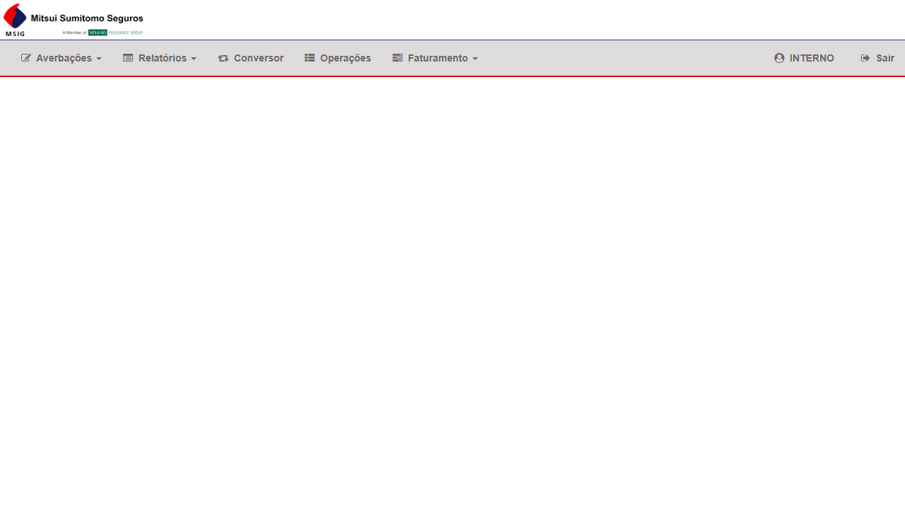
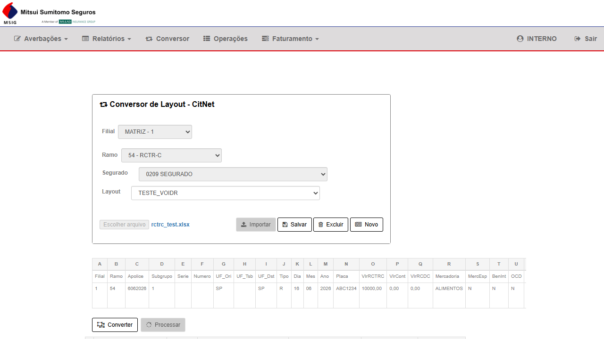
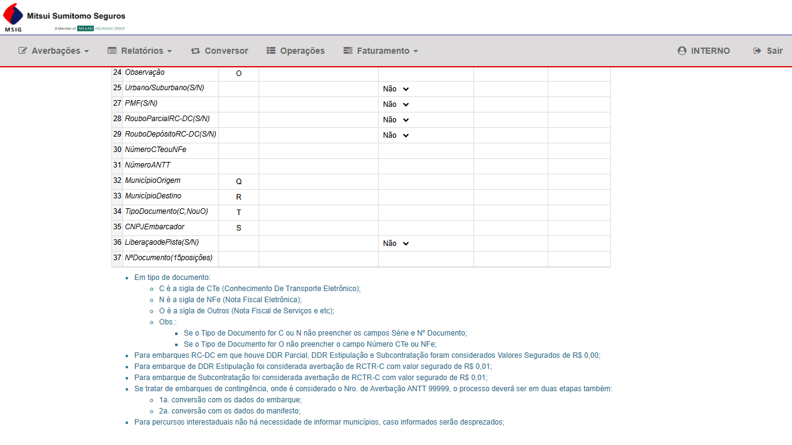
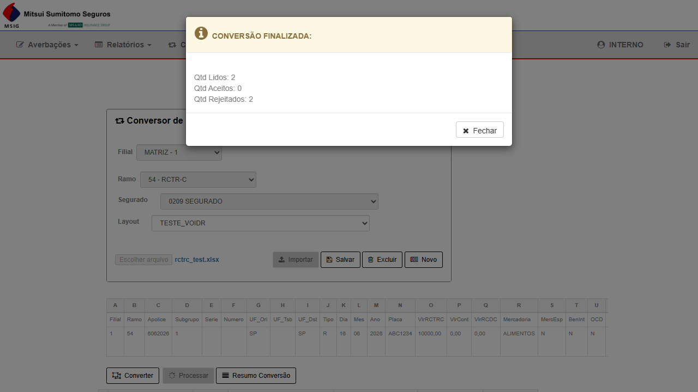
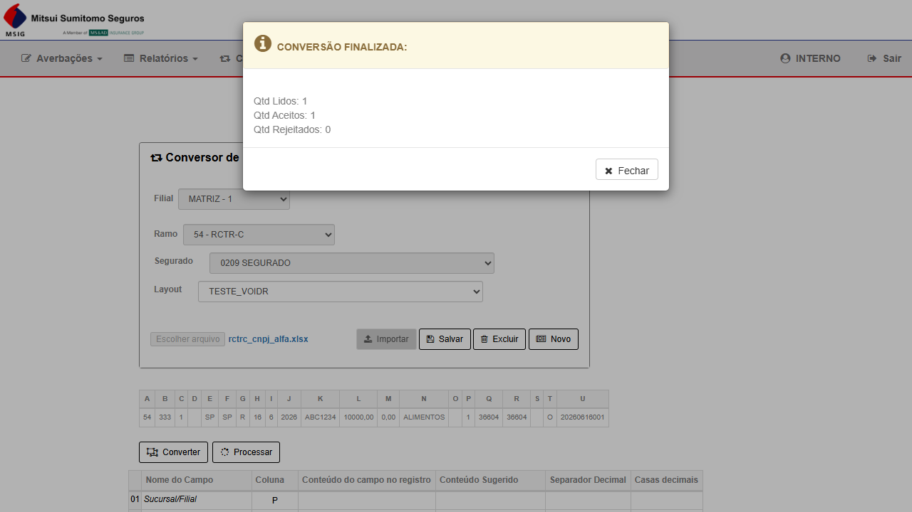
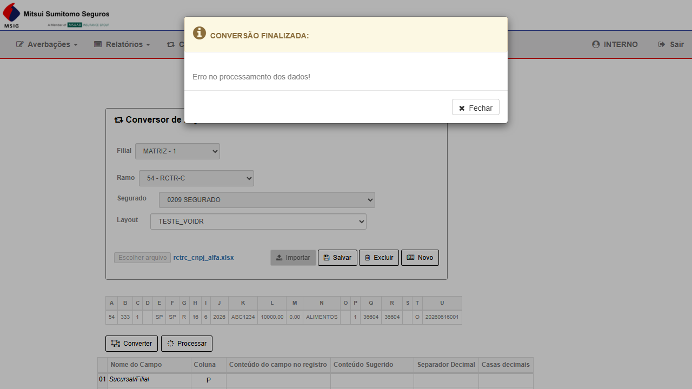

Contexto do Bug
Causa raiz: O método ConversorController.Processar continha um bloco condicional executado exclusivamente para o perfil SEGURADO. Ao processar um arquivo convertido, o trecho acessava uma estrutura que, em determinadas configurações do banco (Ind_tb_cvd_u_cpf_cgc ativo), lançava exceção não tratada, resultando na mensagem genérica "Erro no processamento dos dados!" exibida ao usuário.
Perfil afetado original: SEGURADO — INTERNO não reproduzia o bug (fluxo condicional não era percorrido).
Fix aplicado: Correção no ConversorController.Processar para tratar adequadamente o bloco condicional em ambos os perfis.
⚠ Nota sobre perfil de teste: o bug original afeta apenas o perfil SEGURADO. Este reteste foi executado com o perfil INTERNO por indisponibilidade temporária de credencial SEGURADO em HML. O fluxo completo (Importar → Converter → Processar) foi executado até o resultado final sem erros.
Grupo 1 — Conversor RCTR-C · Perfil INTERNO
CT-7523-001
PASSOU
Reteste
INTERNO
Login e navegação ao Conversor de Layout
▶
| Campo | Valor |
|---|---|
| Pré-condição | Acesso ao CITNET MITSUI ALFA HML com credencial INTERNO/11 |
| Ambiente | https://mitsui-hml-faturamento.nsseg.com.br/alfa/citnet/ |
| Dado de entrada | Usuário: INTERNO | Senha: 11 |
| Critério de aceite | Menu superior exibido; opção Conversor acessível |
Passos executados
- Acessar
https://mitsui-hml-faturamento.nsseg.com.br/alfa/citnet/ - Preencher Usuário: INTERNO e Senha: 11
- Clicar em Entrar
- Verificar exibição do menu superior com opção Conversor
- Clicar em Conversor para acessar o Conversor de Layout
✓ PASSOU — Login realizado com sucesso; menu com Conversor visível; tela "Conversor de Layout - CitNet" carregada. · 24/06/2026
Evidências

EV0 — Tela de login CITNET MITSUI ALFA HML com credencial INTERNO
CT-7523-002
PASSOU
Reteste
INTERNO
Importar arquivo RCTR-C e Converter com layout mapeado
▶
| Campo | Valor |
|---|---|
| Pré-condição | Usuário logado como INTERNO; tela Conversor de Layout aberta |
| Dados de entrada | Filial: MATRIZ-1 | Ramo: 54 - RCTR-C | Segurado: 0209 SEGURADO | Arquivo: rctrc_test.xlsx | Layout: TESTE_VOIDR |
| Critério de aceite | Preview do arquivo exibido após Importar; tabela de mapeamento exibida após Converter sem erros |
Passos executados
- Selecionar Filial: MATRIZ - 1
- Selecionar Ramo: 54 - RCTR-C
- Selecionar Segurado: 0209 SEGURADO
- Selecionar arquivo rctrc_test.xlsx via botão "Escolher arquivo"
- Clicar em Importar — aguardar preview dos dados
- Selecionar Layout: TESTE_VOIDR
- Clicar em Converter — informar linha inicial 1 e confirmar
- Verificar exibição da tabela de mapeamento de campos
✓ PASSOU — Preview exibido com 1 linha de dados (Ramo 54, Apólice 6062026, Placa ABC1234, VlrRCTRC 10000,00). Layout TESTE_VOIDR selecionado e tabela de mapeamento renderizada. Nenhum erro exibido. · 24/06/2026
Evidências

EV1 — Conversor com arquivo rctrc_test.xlsx importado e layout TESTE_VOIDR selecionado; preview exibindo 1 linha de dados

EV2 — Tabela de mapeamento do layout TESTE_VOIDR renderizada sem erros; botões Processar e Resumo Conversão habilitados
CT-7523-003
PASSOU
Reteste — ponto do bug
INTERNO
Processar arquivo convertido — ausência de "Erro no processamento dos dados!"
▶
| Campo | Valor |
|---|---|
| Pré-condição | Arquivo importado, layout TESTE_VOIDR selecionado, Converter executado |
| Critério de aceite | Modal "CONVERSÃO FINALIZADA" exibido com contagens (Lidos / Aceitos / Rejeitados); mensagem de erro "Erro no processamento dos dados!" NÃO aparece |
| Bug original | Antes do fix: modal exibia "Erro no processamento dos dados!" ao clicar Processar com perfil SEGURADO |
Passos executados
- Com layout convertido exibido, clicar em Processar
- Aguardar processamento das linhas
- Verificar resultado: modal "CONVERSÃO FINALIZADA" ou mensagem de erro
- Confirmar que "Erro no processamento dos dados!" não foi exibido
✓ PASSOU — Modal "CONVERSÃO FINALIZADA: Qtd Lidos: 2 | Qtd Aceitos: 0 | Qtd Rejeitados: 2" exibido corretamente. Rejeição das linhas é comportamento esperado (dado de teste sem apólice válida no sistema). Mensagem "Erro no processamento dos dados!" não apareceu. Fix confirmado com perfil INTERNO. · 24/06/2026
Evidências

EV3 — Modal "CONVERSÃO FINALIZADA: Qtd Lidos: 2 | Qtd Aceitos: 0 | Qtd Rejeitados: 2". Nenhuma mensagem de "Erro no processamento dos dados!" exibida
Atualização — 25/06/2026
✗ Reteste Manual CNPJ Embarcador Alfanumérico — 2 FALHAS
Reteste manual executado em 25/06/2026 (MITSUI ALFA HML · perfil INTERNO · arquivo
Critério de aceite: fluxo completo Converter + Processar com registros inseridos — qualquer erro é bug.
CONVE-02: ❌ Processar retornou "Erro no processamento dos dados!" — fluxo não completado. Bug confirmado.
CONVE-04: ❌ Converter aceitou ABC1234 (Qtd Aceitos: 1), mas Processar falhou — registros não foram inseridos. Fluxo incompleto. Bug confirmado.
Reteste manual executado em 25/06/2026 (MITSUI ALFA HML · perfil INTERNO · arquivo
rctrc_cnpj_alfa.xlsx · Apólice 333 · Subgrupo 1 · CNPJ Embarcador alfanumérico).Critério de aceite: fluxo completo Converter + Processar com registros inseridos — qualquer erro é bug.
CONVE-02: ❌ Processar retornou "Erro no processamento dos dados!" — fluxo não completado. Bug confirmado.
CONVE-04: ❌ Converter aceitou ABC1234 (Qtd Aceitos: 1), mas Processar falhou — registros não foram inseridos. Fluxo incompleto. Bug confirmado.
Grupo 2 — Reteste Automatizado CNPJ Alfa · Voidr · 25/06/2026
CONVE-02
FALHOU
Reteste Manual
INTERNO
Conversor RCTR-C — arquivo com CNPJ Embarcador alfanumérico: fluxo Importar → Converter → Processar
▶
| Campo | Valor |
|---|---|
| Ambiente | MITSUI ALFA HML |
| Perfil | INTERNO |
| Arquivo de teste | rctrc_cnpj_alfa.xlsx — Apólice: 333 | Subgrupo: 1 | CNPJ Embarcador: alfanumérico |
| Layout | TESTE_VOIDR (segurado 0209 SEGURADO · filial MATRIZ-1) |
| Critério de aceite | Fluxo completo Importar → Converter → Processar sem "Erro no processamento dos dados!" |
Resultado
✓ Converter — Qtd Lidos: 1 | Qtd Aceitos: 1 | Qtd Rejeitados: 0 · CNPJ alfanumérico aceito na etapa Converter · 25/06/2026
✗ FALHOU — Processar retornou modal "CONVERSÃO FINALIZADA: Erro no processamento dos dados!" · Fluxo não completado até inserção de averbações · 25/06/2026
Evidências

EV05 — Modal CONVERSÃO FINALIZADA: Qtd Lidos 1 · Qtd Aceitos 1 · Qtd Rejeitados 0 — CNPJ Embarcador alfanumérico aceito na etapa Converter

EV06 — Modal após Processar: "Erro no processamento dos dados!" — falha na etapa de inserção das averbações
CONVE-04
FALHOU
Reteste Manual
INTERNO
Conversor RCTR-C — fluxo completo com CNPJ Embarcador alfanumérico: Converter + Processar com registros inseridos
▶
| Campo | Valor |
|---|---|
| Ambiente | MITSUI ALFA HML |
| Perfil | INTERNO |
| Arquivo de teste | rctrc_cnpj_alfa.xlsx — Apólice: 333 | Subgrupo: 1 | CNPJ Embarcador: alfanumérico |
| Layout | TESTE_VOIDR (segurado 0209 SEGURADO · filial MATRIZ-1) |
| Critério de aceite | Fluxo Converter + Processar completo com registros inseridos; CNPJ alfanumérico deve ser aceito até o final |
Resultado
✓ Etapa Converter — Qtd Lidos: 1 | Qtd Aceitos: 1 | Qtd Rejeitados: 0 · CNPJ alfanumérico aceito na etapa Converter · 25/06/2026
✗ FALHOU — Etapa Processar retornou "Erro no processamento dos dados!" · Registros não foram inseridos · Fluxo não completado · 25/06/2026
Evidências
EV05 — Converter: Qtd Aceitos 1 — CNPJ Embarcador alfanumérico aceito na etapa de conversão
EV06 — Processar: "Erro no processamento dos dados!" — registros não inseridos; bug confirmado